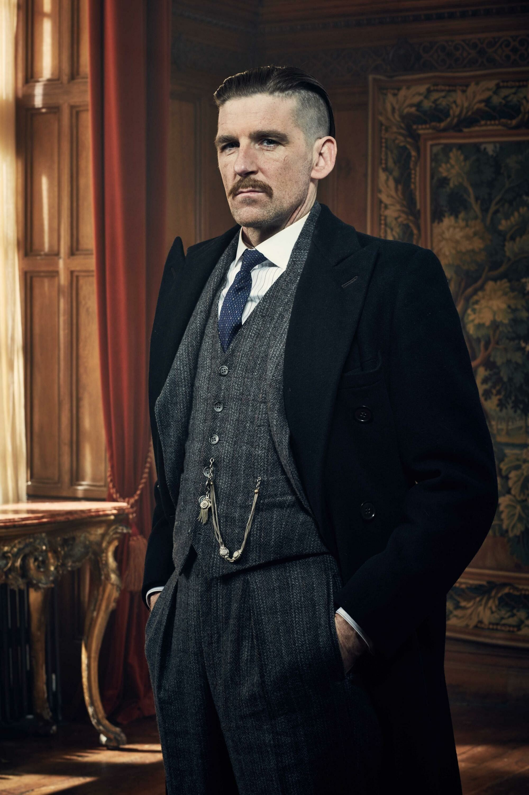

Sinopse
Na sombria e turbulenta Birmingham pós-Primeira Guerra Mundial, a família Shelby constrói seu império entre fumaça, sangue e ambição. Liderados pelo carismático e implacável Thomas Shelby, os Peaky Blinders uma gangue de apostadores e criminosos lutam por poder e respeito em meio a conspirações políticas, guerras de gangues e o peso dos próprios fantasmas do passado. À medida que o império cresce, também crescem os inimigos... e o preço da lealdade.
Elenco

Thomas Shelby
Cillian Murphy

Polly Gray
Helen McCrory

Arthur Shelby
Paul Anderson

Grace Shelby
Annabelle Wallis

John Shelby
Joe Cole

Lizzie Stark
Natasha O'Keeffe
Personagens
Thomas Michael Shelby é o protagonista central da série Peaky Blinders e patriarca da família Shelby. Filho de Arthur Shelby e sua esposa, ele é irmão de Arthur, John, Ada e Finn Shelby. Além disso, é pai de Duke, Charles e Ruby Shelby, e esposo de Grace e Lizzie Shelby. Tommy é o líder da notória gangue criminosa de Birmingham conhecida como Peaky Blinders.
Durante a Primeira Guerra Mundial, Tommy serviu como Sargento-Mor, demonstrando bravura que lhe rendeu várias medalhas de honra medalhas essas que ele descartou em um canal ao retornar, reflexo da profunda amargura e traumas causados pelo conflito. As experiências traumáticas da guerra o deixaram desiludido e atormentado por pesadelos constantes.
Motivado pela vontade de proteger e elevar sua família socialmente, Tommy embarca em uma jornada implacável para conquistar poder e respeito, evitando que os mesmos poderes opressores que os prejudicaram no passado continuem a ameaçá-los. Com inteligência estratégica e frieza calculista, ele expande os negócios da família, enfrentando rivais perigosos e desafios políticos.
Após conflitos com a máfia de Nova York e no contexto da crise econômica de 1929, Tommy Shelby ingressa na política como membro do Parlamento pelo Partido Trabalhista. Nesse período, ele delega a liderança dos negócios familiares ao seu irmão mais velho, Arthur, enquanto consolida sua influência tanto no mundo do crime quanto no cenário político inglês.
Polly Gray, nascida Shelby, é uma figura central na história dos Peaky Blinders e uma peça fundamental dentro da família Shelby. Mãe de Michael e Anna, e tia dos irmãos Thomas, Arthur, John, Ada e Finn, Polly assume o papel de matriarca, guiando e protegendo sua família diante das dificuldades.
Durante a ausência dos irmãos Shelby na Primeira Guerra Mundial, Polly foi responsável por manter os negócios da gangue funcionando, mostrando grande habilidade para administrar a Shelby Company Limited, onde também atua como tesoureira e contadora certificada. Seu papel vai além do mundo dos negócios, pois ela frequentemente toma decisões importantes para resolver conflitos internos da família e aconselhar seus membros.
A morte da atriz Helen McCrory, que interpretava Polly, foi retratada na série com a personagem sendo vítima do IRA em represália a planos da família Shelby. Esse acontecimento causou um grande impacto emocional, principalmente para Michael, que se viu dividido em relação a Tommy Shelby após esse evento.
Arthur Shelby Jr. é o filho mais velho da família Shelby e um dos personagens centrais de Peaky Blinders. Irmão mais velho de Thomas, John, Ada e Finn Shelby, ele assume desde o início um papel de força bruta e liderança dentro da organização criminosa da família. Casado com Linda Shelby, é também pai de Billy Shelby.
Ao longo da série, Arthur atua como o braço direito de Tommy, assumindo o cargo de Vice-Presidente da Shelby Company Limited e representando a família em reuniões importantes, inclusive como membro da ICA. Apesar de sua lealdade inquestionável e dedicação à causa da família, Arthur luta contra problemas pessoais intensos, como traumas de guerra e vícios em drogas, que se agravam ao longo do tempo, colocando sua estabilidade emocional e seu papel na gangue em constante risco.
Mesmo com suas explosões violentas e crises internas, Arthur é uma figura essencial para o funcionamento e a proteção dos negócios dos Shelby, sendo muitas vezes o escudo de Tommy diante dos perigos mais físicos e imediatos.
Ada Thorne é a única mulher entre os irmãos Shelby e uma das personagens mais marcantes de Peaky Blinders. Ao contrário de seus irmãos, inicialmente Ada mantém distância dos negócios ilegais da família, tentando levar uma vida separada das atividades da gangue em Birmingham.
Viúva do ativista comunista Freddie Thorne, com quem teve um filho chamado Karl, em homenagem ao filósofo Karl Marx, Ada representa uma consciência política e social dentro da narrativa, contrastando com os métodos violentos e pragmáticos dos Shelby.
Com o tempo, no entanto, ela acaba assumindo um papel mais ativo nos negócios da família. Em 1924, Ada se torna responsável pela filial americana da Shelby Company Limited, lidando apenas com operações legais e empresariais. Sua evolução demonstra inteligência, independência e um forte senso de liderança, consolidando seu espaço dentro do império dos Shelby sem perder sua própria identidade.
Ada é uma figura de equilíbrio entre o mundo do crime e a visão progressista que carrega de sua juventude, sendo um elo importante entre a ambição da família e a crítica às consequências do poder.
Grace Shelby foi uma figura marcante e complexa na trajetória dos Shelby. De origem irlandesa, ela chegou a Birmingham sob o disfarce de uma simples atendente no Garrison Pub, mas, na verdade, atuava como agente secreta a serviço da polícia local. Sua missão inicial era infiltrar-se entre os Peaky Blinders, ganhando a confiança de Thomas Shelby para obter informações sobre um carregamento de armas desaparecido.
Trabalhando sob as ordens do implacável Inspetor Campbell um antigo conhecido de seu falecido pai, Grace demonstrava frieza e habilidade estratégica, reflexos de seu treinamento como agente de inteligência. Contudo, ao se aproximar de Tommy, acabou desenvolvendo sentimentos reais por ele, colocando em conflito sua lealdade profissional com sua vida pessoal.
Com o passar do tempo, Grace deixou seu papel como espiã para trás e construiu um relacionamento com Thomas, tornando-se sua esposa e mãe de seu filho, Charles Shelby. Seu passado duplo, no entanto, sempre a assombrou, e sua presença dividia opiniões dentro da família Shelby.
A tragédia marcou sua história quando Grace foi assassinada, deixando um vazio profundo na vida de Thomas e mudando o rumo emocional da série. Mesmo após sua morte, sua memória permanece viva como uma das maiores paixões e maiores perdas do protagonista.
John Shelby, também chamado de Johnny ou John Boy, foi um dos membros mais ativos e impulsivos da família Shelby. Ex-combatente da Primeira Guerra Mundial, ele retorna a Birmingham ao lado dos irmãos com a intenção de reconstruir a vida e conquistar poder por meio do império criminoso dos Peaky Blinders.
Como terceiro filho de Arthur Shelby Sr., John é irmão de Arthur, Thomas, Ada e Finn. Ele se destaca por seu temperamento explosivo, sua lealdade incondicional à família e sua atitude direta nas negociações. John não hesita em usar a violência para defender os interesses dos Shelby, o que o torna uma peça-chave nas atividades mais brutais do grupo.
No lado pessoal, John é pai de sete filhos quatro deles com sua primeira esposa, Martha Shelby, falecida antes dos eventos centrais da série. Posteriormente, ele se casa com Esme Lee, membro de uma família cigana, com quem tem mais três filhos. Um dos poucos filhos citados nominalmente é Katie Shelby, enquanto os demais permanecem anônimos.
John também era sócio da Shelby Company Limited, detendo um terço da participação nos negócios familiares, o que o colocava em uma posição de destaque tanto no setor legal quanto no criminoso da organização. Sua jornada na série é marcada por momentos de lealdade extrema, atos impensados e um destino trágico que deixou um impacto duradouro na trajetória dos Peaky Blinders.
Finn Shelby é o caçula da família Shelby e o irmão mais novo de Arthur, Thomas, John e Ada. Filho de Arthur Shelby Sr. e da Sra. Shelby, Finn cresce em meio ao ambiente violento e instável comandado pelos Peaky Blinders, o que molda sua trajetória ao longo da série.
Inicialmente, sua participação é pequena, já que ainda é muito jovem no começo da história com apenas 11 anos na primeira temporada. Mesmo assim, sua curiosidade e impulsividade acabam frequentemente colocando a família em situações complicadas. Com o passar dos anos, Finn amadurece e assume um papel mais presente dentro da organização criminosa dos Shelby.
Ao longo das temporadas, ele tenta provar seu valor dentro do grupo, embora nem sempre seja levado tão a sério quanto os irmãos mais velhos. Seu envolvimento com o submundo do crime se intensifica, assim como seus conflitos internos sobre lealdade e poder. Em um ponto crucial da trama, Finn toma decisões controversas que o afastam da confiança dos demais, transformando-o em uma figura de oposição nos momentos finais da narrativa.
Mais tarde, ele se casa com Mary Shelby, buscando estabilidade, ainda que seu destino permaneça entrelaçado às consequências das escolhas que fez ao longo de sua vida entre os Peaky Blinders.
Lizzie Shelby é uma das personagens mais complexas da trajetória de Thomas Shelby. Inicialmente apresentada como uma jovem que trabalhava como acompanhante em Birmingham, Lizzie começou sua relação com a família Shelby de forma distante — mas, com o tempo, tornou-se peça importante tanto na vida pessoal quanto nos negócios de Thomas.
Sua vida dá uma guinada quando ela se aproxima emocionalmente de Tommy Shelby. O relacionamento, que começou de forma conturbada e carregado de desconfiança, evolui até que Lizzie se torna sua esposa, assumindo o sobrenome Shelby. Com ele, ela tem uma filha, Ruby Shelby, e também passa a cuidar de Charles, filho de Thomas com Grace, agindo como madrasta.
Ao longo das temporadas, Lizzie se transforma: de uma mulher subestimada pelos padrões da época, ela passa a ocupar uma posição de destaque e respeito dentro da família Shelby. Com firmeza e sensibilidade, Lizzie tenta manter um equilíbrio entre o amor pela família e os constantes dilemas morais causados pelas atividades criminosas de seu marido. Muitas vezes, ela serve como a voz da consciência de Thomas mesmo quando suas palavras são ignoradas.
Lizzie também passa por tragédias profundas que testam sua força emocional e seu vínculo com a família. Sua jornada é marcada por sofrimento, resistência e tentativas sinceras de encontrar um novo sentido para sua vida, em meio ao caos gerado pelo império dos Peaky Blinders.
Curiosidades
Embora Tommy Shelby seja um personagem fictício, muitos membros da série foram inspirados em figuras reais. Gangsters como Billy Kimber e Darby Sabini comandaram gangues que rivalizaram no início do século XX na Inglaterra, especialmente em Birmingham e Londres, influenciando diretamente os conflitos retratados na série.
O icônico músico David Bowie era fã da série e autorizou o uso de músicas do seu último álbum, Blackstar, em Peaky Blinders. Bowie enviou uma foto com o corte de cabelo de Tommy Shelby para o criador da série, demonstrando sua admiração e conexão com a produção.
O nome da gangue tem várias teorias. Uma delas diz que os membros costuravam lâminas nas palas das boinas para usar como armas. Porém, historiadores afirmam que o nome pode se referir ao estilo elegante dos integrantes, com "Peaky" significando boinas pontiagudas e "Blinder" sendo gíria local para alguém bem vestido.
Para interpretar Tommy Shelby, o ator Cillian Murphy fumou mais de 3.000 cigarros de ervas sem nicotina durante as gravações, evitando danos à saúde.
Os atores Joe Cole (John Shelby) e Finn Cole (Michael Gray) são irmãos na vida real, o que ajudou a criar uma química natural entre eles na tela, mesmo que seus personagens tenham relações complexas na história.
Muitas cenas foram filmadas em locais históricos do Reino Unido, como o Black Country Living Museum. A equipe de figurino também fez uma pesquisa detalhada para recriar fielmente a moda e o estilo da década de 1920.
O estilo de Tommy Shelby influenciou a moda atual, trazendo de volta cortes de cabelo como o undercut e ternos de três peças, que voltaram a ser tendência após o sucesso da série.
{kind=link}
{kind=link}
{kind=link}
{kind=link}
{kind=link}
{kind=link}
Trilha Sonora
Caso o botão acima não funcione, você pode acessar a playlist completa clicando
neste link.